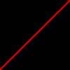
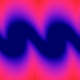

imagegetpixel
imagegetpixel — Retourne les valeurs RVB d'un pixel d'une image précédemment ouverte ou créée.
Description
Opcode du greffon image. Ce greffon se trouve dans le répertoire des greffons et il doit être installé séparément. Le répertoire des greffons est ici : https://github.com/csound/plugins
Retourne les valeurs RVB d'un pixel d'une image précédemment ouverte ou créée. On peut charger une image avec imageload. On peut créer un image vide avec imagecreate.
Syntaxe
ared, agreen, ablue imagegetpixel iimagenum, ax, ay
kred, kgreen, kblue imagegetpixel iimagenum, kx, ky
Initialisation
iimagenum -- la référence de l'image. C'est une valeur retournée par imageload ou par imagecreate.
Exécution
ax (kx) -- position horizontale du pixel (un nombre flottant compris entre 0 et 1).
ay (ky) -- position verticale du pixel (un nombre flottant compris entre 0 et 1).
ared (kred) -- valeur de rouge du pixel (ramenée à un nombre flottant compris entre 0 et 1).
agreen (kgreen) -- valeur de vert du pixel (ramenée à un nombre flottant compris entre 0 et 1).
ablue (kblue) -- valeur de bleue du pixel (ramenée à un nombre flottant compris entre 0 et 1).
Exemples
Voici un exemple de l'opcode imagegetpixel. Il utilise les fichiers imagegetpixel.csd, imageOpcode01.png et imageOpcode02.png.
Exemple 460. Exemple de l'opcode imagegetpixel.
<CsoundSynthesizer> <CsOptions> ; Select audio/midi flags here according to platform -odac --limiter=.95 ;;;realtime audio out and limiter ;-iadc ;;;uncomment -iadc if realtime audio input is needed too ; For Non-realtime ouput leave only the line below: ; -o imagegetpixel.wav -W ;;; for file output any platform </CsOptions> <CsInstruments> sr = 44100 ksmps = 32 0dbfs = 1 nchnls = 2 ; by Cesare Marilungo 2008 ; additions by Menno Knevel 2021 giimage01 imageload "imageOpcode01.png" ; load 2 images - should be 512x512 pixels giimagew01, giimageh01 imagesize giimage01 giimage02 imageload "imageOpcode02.png" giimagew02, giimageh02 imagesize giimage02 gisine ftgen 1, 0, 8192, 10, 1 ; sine wave gifrqs ftgen 2, 0, 512, -5, 1, 512, 10 ; will hold the frequencies giamps ftgen 3, 0, 512, 10, 1 ; ready for amplitude data instr 1 kindex = 0 icnt = giimageh01 ; height of image imageOpcode01.png kx_ linseg 0, p3, 1 ; scans x-axis kenv linseg 0, p3*.1, .1, p3*.8, .1, p3*.1, 0 ; amplitude envelope ; Read a column of pixels and store the red values inside the table 'giamps' loop: ky_ = 1-(kindex/giimageh01) ; reverses direction of reading kred, kgreen, kblue imagegetpixel giimage01, kx_, ky_ ; get the pixel color values at kx_, ky_ tablew kred, kindex, giamps ; write the red values inside the table 'giamps' kindex = kindex+1 if (kindex < icnt) kgoto loop ; setting amplitudes for each partial according to the image asig adsynt2 kenv, 110, gisine, gifrqs, giamps, icnt, 2 ; oscillator bank (additive synthesis) outs asig, asig endin instr 2 ; Free memory used by imageOpcode01.png imagefree giimage01 endin instr 3 kindex = 0 icnt = giimageh02 ; height of image imageOpcode02.png kx_ linseg 0, p3, 1 ; scans x-axis kenv linseg 0, p3*.2, .02, p3*.4, .02, p3*.2, 0 ; amplitude envelope ; Read a column of pixels and store the blue values inside the table 'giamps' loop: ky_ = 1-(kindex/giimageh02) ; reverses direction of reading kred, kgreen, kblue imagegetpixel giimage02, kx_, ky_ ; get the pixel color values at kx_, ky_ tablew kblue, kindex, giamps ; write the blue values inside the table 'giamps' kindex = kindex+1 if (kindex < icnt) kgoto loop asig adsynt2 kenv, 100, gisine, gifrqs, giamps, icnt, 2 ; oscillator bank (additive synthesis) outs asig, asig endin instr 4 ; Free memory used by imageOpcode02.png imagefree giimage02 endin </CsInstruments> <CsScore> i1 1 3 ; play first image i2 4 .1 ; then unload first image i3 5 5 ; play second image i4 11 .1 ; and unload that one e </CsScore> </CsoundSynthesizer>
Voici les images imageOpcode01.png et imageOpcode02.png pour l'exemple imagegetpixel :
 Voici un exemple musical de l'opcode imagegetpixel. Il utilise les fichiers imagegetpixel-musical.csd et imageOpcode03.png.
Exemple 461. Exemple musical de l'opcode imagegetpixel.
<CsoundSynthesizer> <CsOptions> ; Select audio/midi flags here according to platform -odac ;;;realtime audio out ;-iadc ;;;uncomment -iadc if realtime audio input is needed too ; For Non-realtime ouput leave only the line below: ; -o imagegetpixel-musical.wav -W ;;; for file output any platform </CsOptions> <CsInstruments> sr = 44100 ksmps = 32 nchnls = 2 0dbfs = 1 #define TABLEN# 64# giRtab ftgen 1, 0, $TABLEN, 10, 1 giGtab ftgen 2, 0, $TABLEN, 10, 1 giBtab ftgen 3, 0, $TABLEN, 10, 1 gisin ftgen 11, 0, 1024, 10, 1 giimg imageload "imageOpcode03.png" giimgH, giimgW imagesize giimg instr 1 kndx = 0 kyR oscili .5, .15, 11 kyR = (kyR + .5) * .999 kyG oscili .5, .25, 11 kyG = (kyG + .5) * .999 kyB oscili .5, .4, 11 kyB = (kyB + .5) * .999 ilen = 64 loop: kR, k0, k1 imagegetpixel giimg, kndx / (ilen+1), kyR k2, kG, k3 imagegetpixel giimg, kndx / (ilen+1), kyG k4, k5, kB imagegetpixel giimg, kndx / (ilen+1), kyB kRval = kR * 2 - 1 tabw kRval, kndx, giRtab kGval = kG * 2 - 1 tabw kGval, kndx, giGtab kBval = kB * 2 - 1 tabw kBval, kndx, giBtab if kndx < ilen then kndx = kndx + 1 kgoto loop endif iampgain = .3 kamp madsr 2, 0, 1, 3 kamp = kamp * iampgain ifrq = cpspch(p4) aR oscil3 kamp * kyG, ifrq, giRtab aG oscil3 kamp * kyB * .8, ifrq * 2.01, giGtab aB oscil3 kamp * kyR * .8, ifrq * 1.99, giBtab aR butlp aR, 5000 aG butlp aG, 10000 aB butlp aB, 10000 asigL = (aR + aG)*.9 ; green Left channel asigR = (aR + aB)*.9 ; blue Right channel & red in the middle adelL comb asigL, 1, .25 asigL = asigL + adelL * .5 asigL dcblock asigL adelR comb asigR, 1, .3 asigR = asigR + adelR * .5 asigR dcblock asigR outs asigL, asigR endin </CsInstruments> <CsScore> i1 0 25 8.00 i. 5 20 8.02 i. 10 10 8.07 i. 15 10 8.09 i. 20 5 8.11 </CsScore> </CsoundSynthesizer>
Voici l'image imageOpcode03.png pour l'exemple imagegetpixel-musical :